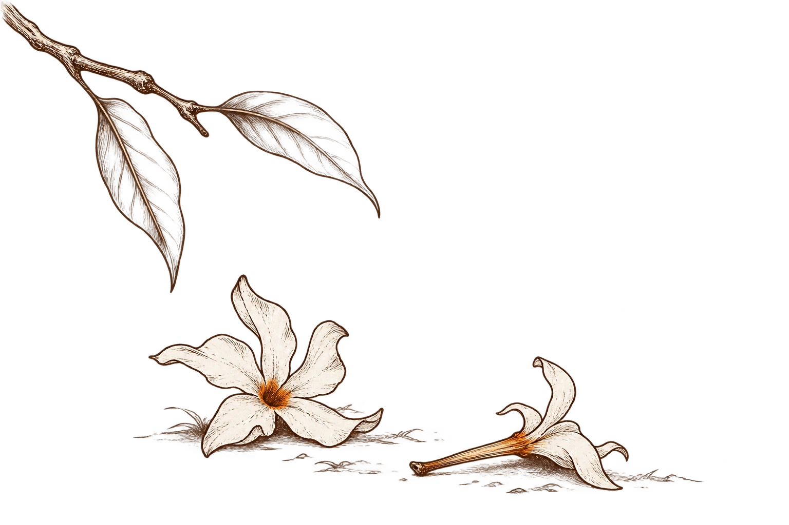

Current issue · 48
October 2026
What the season leaves open
The riverbank has room for what cannot yet be said. Pale grasses turn towards the water; two birds cross a sky that asks nothing of them. This October issue moves between protest and tenderness, silence and the effort to understand. The cover offers a little space in which those different voices can meet.
Cultural connection
Kans grass evokes the autumn landscape of eastern India, when pale plumes gather along rivers and open fields.
ନୀରବତାର ଆର୍ତ୍ତନାଦ
 Original: Odia
Original: Odiaଜୁଆ
 Original: Odia
Original: Odiaहरश्रृंगार धरा पर बिखर गई
 Original: Hindi
Original: HindiNo Love Poems Henceforth
Where One Is Upto?
The Balidiah Dam
When the Stars Forget My Name
 Original: English
Original: EnglishGandhian Thought
It`s Atlas again
Eternal waiting
 Original: English
Original: Englishଏହି ସଂଖ୍ୟା ପାଇଁ କିଛି କଥା
ଅନ୍ୟ ପାଇଁ ଟିକିଏ ଜାଗା
କାଶତଣ୍ଡୀର ଧଳା ଫୁଲ ଉପରେ ଶରତର ଆଲୁଅ। ଦୂରରୁ ଭାସିଆସୁଛି ବାଜାର ଶବ୍ଦ। ପୂଜା ଆସିଲେ ଘରକୁ ଫେରିବାର, ଚିହ୍ନା ମୁହଁ ପାଖରେ ଟିକେ ବସିବାର ଇଚ୍ଛା ହୁଏ। ଏହି ଦେଖାସାକ୍ଷାତ ଭିତରେ କାହାର ନକହିଥିବା କଥା ପାଇଁ ମଧ୍ୟ ଟିକିଏ ଜାଗା ରହୁ। କବିତା ଲାଇଭ୍ର ଅଠଚାଳିଶତମ ସଂସ୍କରଣକୁ ସେହି ଇଚ୍ଛା ନେଇ ଖୋଲିବା।
ଏ ସଂଖ୍ୟାର ସବୁ କବିତା ଉତ୍ସବର କବିତା ନୁହେଁ। ତେଣୁ ସେମାନଙ୍କୁ ଏକାଠି ପଢ଼ିବାର ଅର୍ଥ ମଧ୍ୟ ଅଲଗା। ପ୍ରାଚୀତାରାଙ୍କ “ଦେବୀ ପକ୍ଷ” ଆମକୁ ସହଜ ସାନ୍ତ୍ୱନା ଦିଏନି। ନାରୀ ଉପରେ ହିଂସା ଓ ତାଙ୍କ ଅସହାୟତା ସାମ୍ନାରେ ଦେବଦେବୀଙ୍କ ନିରବତାକୁ ସେ କଠୋର ପ୍ରଶ୍ନ କରେ। ସେହି କ୍ଷୋଭକୁ ପୂଜାର ଆନନ୍ଦରେ ଢାଙ୍କିଦେବା ଅନ୍ୟାୟ ହେବ। ବରଂ ଶକ୍ତିର ଆରାଧନା କରୁଥିବା ଆମେ ଜଣେ ମଣିଷର ନିରାପତ୍ତା ଓ ମର୍ଯ୍ୟାଦା ପାଇଁ କେଉଁଠି ଠିଆ ହେବା—ସେ ପ୍ରଶ୍ନଟି ନିଜ ପାଖରେ ରଖିବା।
ଏହି ପ୍ରସଙ୍ଗର କବିତା: Prachitara
ଶାଶ୍ଵତୀ ହୋତାଙ୍କ “ନୀରବତାର ଆର୍ତ୍ତନାଦ” ସେହି ଶୁଣିବାର ଦାୟିତ୍ୱକୁ ଆହୁରି ନିକଟକୁ ଆଣେ। କବିତାର ଶେଷରେ ଶୁଣୁ:
କାହାକୁ ଶୁଭେନି
ମୋ ମୌନତାରେ ଅହରହ
ବାଜୁଥିବା ବେଦନାର କୋଳାହଳ।
ଏହି ପ୍ରସଙ୍ଗର କବିତା: Saswati Hota
ଯେଉଁଠି ଶବ୍ଦ ପହଞ୍ଚୁନାହିଁ, ସେଠି ତରବରିଆ ପରାମର୍ଶ ଦେବା ପୂର୍ବରୁ ଆମେ ବସିପାରିବା କି? ସବିତା ସିଂହ ମୀରାଙ୍କ ପାରିଜାତ ଝରିପଡ଼ି ମାଟିର କୋଳ ପାଏ। ତାଙ୍କର ଏହି ପଙ୍କ୍ତି ଆଶ୍ରୟର ଏକ କୋମଳ ସମ୍ଭାବନା ଖୋଲେ:
शाखा से छूटना अंत नहीं है,
ଏଠାରେ ଅନୁବାଦ
ଡାଳରୁ ଝରିପଡ଼ିବା ଶେଷ ନୁହେଁ,

ଏହି ପ୍ରସଙ୍ଗର କବିତା: Sabita Singh Meera
ଝରିବା ପରେ ମଧ୍ୟ ସୁବାସ କାହା ପାଖରେ ପହଞ୍ଚିପାରେ। ବିଷ୍ଣୁଚରଣ ପରିଡ଼ାଙ୍କ କବିତାରେ ଆଘାତ ପରେ ପ୍ରେମକବିତାଠାରୁ ମୁହଁ ଫେରାଇବାର ଘୋଷଣା ଅଛି; ତଥାପି ଜୀବଜଗତକୁ ଭଲପାଇବା ଥାମେନି। ଶେଷ ପଙ୍କ୍ତିଟି ଅତି ସରଳ:
I love, I hardly hate
ଏଠାରେ ଅନୁବାଦ
ମୁଁ ଭଲପାଏ, ଘୃଣା କ୍ୱଚିତ୍ କରେ
ଏହି ପ୍ରସଙ୍ଗର କବିତା: Bishnu Charan Parida
ଏହି ମମତା ଆମକୁ ମଣିଷଠାରୁ ନଦୀ, ପାହାଡ଼ ଓ ଗଛ ପାଖକୁ ନେଇଯାଏ। ମାନସ ବକ୍ସୀ ବାହାରର ଅଗ୍ରଗତି ମଧ୍ୟରେ ଭିତରର ଶାନ୍ତି କେଉଁଠି ବୋଲି ଖୋଜନ୍ତି। ସତ୍ୟସୁନ୍ଦର ସାମନ୍ତଙ୍କ “The Balidiah Dam”ରେ ଜଳ ଓ ସବୁଜ ପାହାଡ଼ର ସୌନ୍ଦର୍ଯ୍ୟ ସହ ରହିଯାଏ ପର୍ଯ୍ୟଟକ ଛାଡ଼ିଯାଇଥିବା ବର୍ଜ୍ୟ। ସୁନ୍ଦର ଜାଗାରୁ ଫେରିବାବେଳେ ଆମେ ସେଠି କ’ଣ ଛାଡ଼ିଆସୁଛୁ—ପୂଜାର ବୁଲାବୁଲି ଭିତରେ ଏହି ଛୋଟ ପ୍ରଶ୍ନଟି ମଧ୍ୟ ସାଙ୍ଗରେ ରହୁ।
ଏହି ପ୍ରସଙ୍ଗର କବିତା: Manas Bakshi · Satya Sundar Samanta
ପ୍ରତିଭା ପରିଡାଙ୍କ “ଜୁଆ” ଜିତିବା ଓ ହାରିବାର ହିସାବକୁ ଓଲଟାଇ ଦେଖେ। ବାଣୀ ମହାନ୍ତିଙ୍କ ଆଟଲାସ୍ର କାନ୍ଧକୁ ଫେରିଆସେ ସେହି ପୁରୁଣା ଭାର। ଏ ଦୁଇ କବିତା ପଢ଼ି ଆମେ ଭାବିପାରୁ: କାହାକୁ ଶକ୍ତ ବୋଲି କହିଦେଇ ତାଙ୍କ କାନ୍ଧରେ ସବୁ ଭାର ଛାଡ଼ିଦେଉନାହୁଁ ତ? ଆକାଶ ନାୟକଙ୍କ “Gandhian Thought”ରେ ବୁଝିବାର ଚେଷ୍ଟା ଏବେ ବି ଚାଲିଛି। କ୍ରୋଧଠାରୁ ଦୂରେଇବା, ଅନ୍ୟର ଭାର ଟିକେ ବାଣ୍ଟିନେବା—ଏସବୁ ପାଇଁ ପ୍ରତିଦିନର ଅଭ୍ୟାସ ଲୋଡ଼ା।
ଏହି ପ୍ରସଙ୍ଗର କବିତା: Prativa Parida · Bani Mohanty · Akash Naik
ନନ୍ଦିନୀ ମିତ୍ରଙ୍କ ଆକାଶରେ ମଣିଷର ଅନୁପସ୍ଥିତି ପରେ ମଧ୍ୟ ତାରା ଓ ପୃଥିବୀର ଗତି ରହିବ। ଗଣେଶ୍ୱର ବେହେରାଙ୍କ କବିତାରେ ରହିବ ଫେରିବାର ଆଶା ଓ ଦୀର୍ଘ ଅପେକ୍ଷା। ଏହି ଦୁଇ ସ୍ୱର ପାଖରେ ପୂଜାର ଭିଡ଼ ଭିତରେ ଏକୁଟିଆ ହୋଇଯାଇଥିବା ମଣିଷଟିଏ ମନେପଡ଼େ। ହୁଏତ ତାଙ୍କୁ ଥରେ ଡାକିବାର, ତାଙ୍କ ସହ ଏକ କପ୍ ଚା’ ପିଇବାର ସମୟ ଏବେ।
ଏହି ପ୍ରସଙ୍ଗର କବିତା: Nandini Mitra · GANESWAR BEHERA
ଏହି ଏଗାରଟି ସ୍ୱର ନେଇ ଆସିଥିବା ସମସ୍ତ କବିଙ୍କୁ ଧନ୍ୟବାଦ। ଆପଣମାନଙ୍କ କବିତା ପରସ୍ପରଠାରୁ ଅଲଗା; ସେହି ଅଲଗାପଣ ହିଁ ଏ ସଂଖ୍ୟାକୁ ଜୀବନ୍ତ କରେ। ପ୍ରିୟ ପାଠକ, ଯେଉଁ ପଙ୍କ୍ତି ପାଖରେ ମନ ଅଟକିଯାଉଛି, ସେଠି ଟିକେ ରହନ୍ତୁ। ଆଉଥରେ ପଢ଼ନ୍ତୁ, କବିଙ୍କୁ ଆପଣଙ୍କ ଅନୁଭବ ଜଣାନ୍ତୁ। ଏହି ଶାରଦୀୟ ସମୟରେ ଆମ ଘର ଆଲୋକିତ ହେଉ; ପରସ୍ପର ପାଇଁ ଖୋଲା ରହିବାର ସାହସ ମଧ୍ୟ ବଢ଼ୁ। ଶୁଭ ଦୁର୍ଗାପୂଜା।
A note for this edition
A little room for another
Autumn light falls on white kans grass. From somewhere beyond the houses comes the sound of festival music. Puja brings the wish to go home, to sit for a while beside a familiar face. Among these reunions, may there also be a little room for what someone has not yet managed to say. Let us open the forty-eighth edition of Kabita Live with that wish.
Not every poem in this issue is a festival poem. That makes reading them together all the more meaningful. Prachitara’s “ଦେବୀ ପକ୍ଷ” offers no easy consolation. Faced with violence against a woman and her helplessness, it fiercely questions the silence of the gods. To cover that anger with festive cheer would be unfair to the poem. As we honour strength, let us keep its question close: where will we stand when another person’s safety and dignity are at stake?
Poems in this passage: Prachitara
Saswati Hota’s “ନୀରବତାର ଆର୍ତ୍ତନାଦ” brings the responsibility of listening closer still. At its close, we hear:
କାହାକୁ ଶୁଭେନି
ମୋ ମୌନତାରେ ଅହରହ
ବାଜୁଥିବା ବେଦନାର କୋଳାହଳ।
Excerpt in translation
No one hears
the clamour of pain
ceaseless in my silence.
Poems in this passage: Saswati Hota
Where words cannot reach, could we sit beside someone before offering hurried advice? In Sabita Singh Meera’s poem, the fallen parijat finds the earth’s embrace. This line opens a tender possibility of shelter:
शाखा से छूटना अंत नहीं है,
Excerpt in translation
To fall from the branch is not the end,
Poems in this passage: Sabita Singh Meera
Even after falling, a flower’s fragrance can reach someone. In Bishnu Charan Parida’s poem, hurt prompts a declaration of turning away from love poems; yet love for the living world does not cease. The final line is disarmingly simple:
I love, I hardly hate
Poems in this passage: Bishnu Charan Parida
That tenderness takes us from people to rivers, hills and trees. Amid outward progress, Manas Bakshi searches for inward peace. In Satya Sundar Samanta’s “The Balidiah Dam”, the beauty of water and green hills shares the scene with waste left by visitors. What do we leave behind when we return from a beautiful place? May that small question travel with us on our Puja outings.
Poems in this passage: Manas Bakshi · Satya Sundar Samanta
Prativa Parida’s “ଜୁଆ” turns the reckoning of winning and losing on its head. In Bani Mohanty’s poem, the old burden returns to Atlas’s shoulders. Reading these poems together, we might ask whether calling someone strong lets us leave every weight for them to carry. In Akash Naik’s “Gandhian Thought”, understanding remains a work in progress. Stepping away from anger, sharing a little of another person’s burden—these things take daily practice.
Poems in this passage: Prativa Parida · Bani Mohanty · Akash Naik
In Nandini Mitra’s sky, the stars and the turning world will remain after a person is gone. In Ganeswar Behera’s poem, hope of return endures through a long wait. Beside these two voices, we may remember someone who feels alone in the festival crowd. Perhaps now is the time to call them, to sit down over a cup of tea.
Poems in this passage: Nandini Mitra · GANESWAR BEHERA
Thank you to all the poets who have brought these eleven voices to the issue. Your poems differ from one another; that difference gives these pages life. Dear reader, when a line holds you, stay with it a little. Read it again, and let its poet know what it brought to you. May our homes be bright this autumn, and may we find more courage to remain open to one another. Warm wishes for Durga Puja.
इस अंक के लिए कुछ बातें
किसी और के लिए थोड़ी जगह
काश के सफ़ेद फूलों पर शरद की धूप उतर रही है। दूर कहीं से उत्सव के बाजों की आवाज़ आ रही है। पूजा आती है तो घर लौटने, किसी परिचित चेहरे के पास थोड़ी देर बैठने का मन होता है। इन मुलाक़ातों के बीच किसी की अनकही बात के लिए भी थोड़ी जगह बची रहे। इसी इच्छा के साथ कबिता लाइव के अड़तालीसवें अंक को खोलें।
इस अंक की हर कविता उत्सव की कविता नहीं है। इसलिए इन्हें साथ पढ़ने का अपना अर्थ है। प्राचीतारा की “ଦେବୀ ପକ୍ଷ” कोई आसान दिलासा नहीं देती। स्त्री पर हिंसा और उसकी असहायता के सामने देवताओं की चुप्पी से वह कठोर सवाल करती है। उस आक्रोश को पूजा की ख़ुशी से ढक देना कविता के साथ अन्याय होगा। शक्ति की आराधना करते हुए यह प्रश्न अपने पास रखें: किसी मनुष्य की सुरक्षा और गरिमा के लिए हम कहाँ खड़े होंगे?
इस प्रसंग की कविताएँ: Prachitara
शाश्वती होता की “ନୀରବତାର ଆର୍ତ୍ତନାଦ” सुनने की उस ज़िम्मेदारी को और पास ले आती है। कविता के अंत में यह स्वर सुनाई देता है:
କାହାକୁ ଶୁଭେନି
ମୋ ମୌନତାରେ ଅହରହ
ବାଜୁଥିବା ବେଦନାର କୋଳାହଳ।
अंश का अनुवाद
किसी को सुनाई नहीं देता
मेरे मौन में निरंतर
गूँजता पीड़ा का कोलाहल।
इस प्रसंग की कविताएँ: Saswati Hota
जहाँ शब्द नहीं पहुँच पाते, वहाँ जल्दबाज़ी में सलाह देने से पहले क्या हम किसी के पास बैठ सकते हैं? सविता सिंह मीरा की कविता में झरते पारिजात को धरती की गोद मिलती है। उनकी यह पंक्ति आश्रय की एक कोमल संभावना खोलती है:
शाखा से छूटना अंत नहीं है,
इस प्रसंग की कविताएँ: Sabita Singh Meera
झरने के बाद भी फूल की सुगंध किसी तक पहुँच सकती है। विष्णुचरण परिड़ा की कविता में चोट खाकर प्रेम-कविताओं से मुँह मोड़ लेने की घोषणा है; फिर भी जीव-जगत से प्रेम करना नहीं छूटता। आख़िरी पंक्ति बहुत सहज है:
I love, I hardly hate
अंश का अनुवाद
मुझमें प्रेम है, घृणा बहुत कम
इस प्रसंग की कविताएँ: Bishnu Charan Parida
यह ममता हमें मनुष्यों से नदियों, पहाड़ों और पेड़ों तक ले जाती है। बाहर की प्रगति के बीच मानस बक्शी भीतर की शांति खोजते हैं। सत्यसुंदर सामंत की “The Balidiah Dam” में पानी और हरे पहाड़ों की सुंदरता के साथ सैलानियों का छोड़ा हुआ कचरा भी रह जाता है। किसी सुंदर जगह से लौटते समय हम वहाँ क्या छोड़ आते हैं? पूजा की सैर में यह छोटा-सा प्रश्न भी हमारे साथ रहे।
इस प्रसंग की कविताएँ: Manas Bakshi · Satya Sundar Samanta
प्रतिभा परिडा की “ଜୁଆ” जीत और हार के हिसाब को उलटकर देखती है। बाणी महांति की कविता में एटलस के कंधों पर वही पुराना बोझ लौट आता है। इन दोनों कविताओं को पढ़कर हम सोच सकते हैं: किसी को मज़बूत कहकर कहीं हम सारा भार उसी के कंधों पर तो नहीं छोड़ देते? आकाश नायक की “Gandhian Thought” में समझने की कोशिश अब भी जारी है। क्रोध से दूर हटना, किसी का थोड़ा-सा बोझ बाँट लेना—इनके लिए रोज़ का अभ्यास चाहिए।
इस प्रसंग की कविताएँ: Prativa Parida · Bani Mohanty · Akash Naik
नंदिनी मित्रा के आकाश में मनुष्य के चले जाने के बाद भी तारे रहेंगे और पृथ्वी घूमती रहेगी। गणेश्वर बेहरा की कविता में लौट आने की आशा और लंबी प्रतीक्षा बनी रहेगी। इन दोनों स्वरों के पास ठहरते हुए पूजा की भीड़ में अकेला पड़ गया कोई व्यक्ति याद आता है। शायद उसे एक बार बुलाने, उसके साथ एक प्याली चाय पीने का समय यही है।
इस प्रसंग की कविताएँ: Nandini Mitra · GANESWAR BEHERA
इन ग्यारह स्वरों को लेकर आए सभी कवियों का धन्यवाद। आपकी कविताएँ एक-दूसरे से अलग हैं; यही अलगपन इस अंक को जीवंत बनाता है। प्रिय पाठक, जिस पंक्ति पर मन ठहर जाए, वहाँ थोड़ी देर रुकिए। फिर पढ़िए, और उसके कवि को बताइए कि उसने आपके भीतर क्या जगाया। इस शारदीय समय में हमारे घर रोशन हों; एक-दूसरे के लिए मन खुला रखने का साहस भी बढ़े। दुर्गापूजा की शुभकामनाएँ।
Likes and comments are not available yet.
Leave a comment